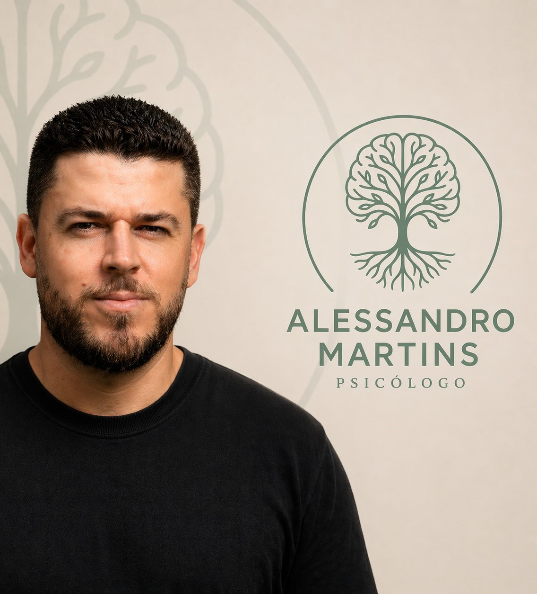
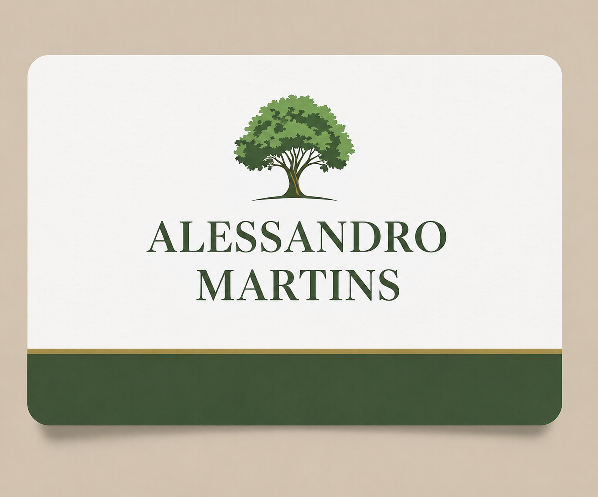

· Atendimento Online
Atendimento psicológico para adolescentes, adultos e idosos. Um espaço seguro de acolhimento, reflexão e desenvolvimento.

Psicólogo Clínico
CRP 04-73006
Áreas de Atuação
A terapia pode ser um espaço de acolhimento, reflexão e desenvolvimento para diferentes momentos da vida. Abaixo, algumas das demandas que acompanho.
Ansiedade
Compreendendo gatilhos e desenvolvendo formas mais saudáveis de lidar.
Autoestima
Fortalecendo a autoconfiança e construindo uma relação mais saudável consigo.
Relacionamentos
Compreendendo padrões, melhorando a comunicação e fortalecendo vínculos.
Dependência Emocional
Construindo autonomia emocional e segurança interna.
Luto
Acolhimento para atravessar perdas, respeitando seu tempo e singularidade.
Autoconhecimento
Compreendendo valores, necessidades e desejos para uma vida mais autêntica.
Questões Familiares
Navegando conflitos e fortalecendo as relações familiares.
Desenvolvimento Pessoal
Crescendo emocionalmente e desenvolvendo recursos internos.

Sobre Mim
Acredito que cada pessoa possui recursos internos para enfrentar seus desafios e construir uma vida mais autêntica. Como psicólogo, meu papel não é oferecer respostas prontas, mas caminhar ao lado de quem busca compreender melhor sua própria história.
Graduação em Psicologia
Faculdade Pitágoras — online
Pós-graduação em Psicoterapia
Faculdade Iguaçu — PR
Pós-graduação em Psicologia do Trabalho
Faculdade Iguaçu — PR
Pós-graduação em Psicologia de Grupo e Desenvolvimento de Equipes
Faculdade Iguaçu — PR
Processo Terapêutico
Cada jornada é única. Conheça como funciona nosso processo de trabalho.
Como é a primeira sessão?
+A primeira sessão é um momento de acolhimento e conhecimento mútuo. Você poderá falar sobre sua história, suas dificuldades atuais, expectativas em relação à terapia e os motivos que o levaram a buscar acompanhamento psicológico.
Qual a duração das sessões?
+As sessões possuem duração média de 50 minutos, tempo pensado para garantir um espaço adequado de escuta e trabalho terapêutico.
Com que frequência acontecem os encontros?
+Geralmente os encontros são semanais. Essa frequência favorece a construção do vínculo terapêutico e permite um acompanhamento mais consistente das questões trabalhadas.
A terapia online funciona?
+Sim. Diversos estudos demonstram que a terapia online pode ser tão eficaz quanto a presencial para diferentes demandas psicológicas. Além disso, oferece praticidade e acessibilidade para muitas pessoas.
Quanto tempo dura o processo terapêutico?
+Não existe uma resposta única para essa pergunta. Cada pessoa possui sua própria história, objetivos e necessidades. Algumas demandas podem ser trabalhadas em menos tempo, enquanto outras exigem um acompanhamento mais prolongado. O processo é construído respeitando o ritmo de cada indivíduo.
Onde acontecem os atendimentos?
+Ofereço atendimento online para todo o Brasil. As sessões online acontecem por plataformas seguras e confidenciais.
Minha Abordagem
A Psicologia Humanista parte da compreensão de que cada pessoa é única e possui potencial para crescer, desenvolver-se e encontrar caminhos mais saudáveis para sua vida.
Na terapia, o foco não está apenas nos sintomas ou problemas, mas também na compreensão da experiência vivida pela pessoa. O objetivo é favorecer o autoconhecimento, a autonomia e o desenvolvimento pessoal.
Meu papel
Oferecer acolhimento, empatia e respeito, sem julgamentos.
Seu papel
Protagonista da sua própria história e transformação.
Acredito que cada pessoa possui recursos internos para enfrentar seus desafios e construir uma vida mais autêntica.
— Alessandro Martins, PsicólogoPerguntas Frequentes
Preciso estar em crise para fazer terapia?
+Não. Muitas pessoas procuram terapia para se conhecer melhor, desenvolver habilidades emocionais, melhorar relacionamentos ou promover crescimento pessoal.
Terapia é só para quem tem transtorno?
+Não. A terapia pode beneficiar qualquer pessoa que deseje compreender melhor a si mesma, enfrentar desafios ou desenvolver recursos emocionais.
Como funciona o sigilo?
+Tudo o que é compartilhado durante as sessões é protegido pelo sigilo profissional, conforme previsto pelo Código de Ética do Psicólogo.
Posso fazer terapia online de qualquer lugar?
+Sim. Desde que possua acesso à internet e um ambiente reservado para a sessão.
Como saber se a terapia está funcionando?
+Os resultados costumam aparecer gradualmente. Muitas pessoas percebem mudanças na forma de lidar com emoções, conflitos, relacionamentos e decisões da vida cotidiana.
O que acontece se eu não souber sobre o que falar?
+Isso é mais comum do que parece. O terapeuta pode ajudar a conduzir a conversa e explorar aspectos importantes da sua experiência.
Posso interromper a terapia quando quiser?
+Sim. A terapia é um processo voluntário. Ainda assim, recomenda-se conversar sobre essa decisão para que o encerramento possa ocorrer de forma consciente e saudável.
Contato
Estou aqui para caminhar ao seu lado. Entre em contato e vamos conversar sobre como posso te ajudar.